Để tiếp tục bài trước mình xin được giới thiệu tiếp 1 phần cực kì quan trọng và cũng phức tạp không kém.
1. Position
position là 1 thuộc tính giúp ta sắp đặt vị trí cho phần tử mà ta muốn. Chúng ta sẽ đi qua từng giá trị của nó.
static
static là giá trị mặc định (không cần set cũng có). Vị trí của phần tử được sắp xếp như bình thường, có nghĩa là nó sẽ sắp xếp theo thứ tự, như kiểu từ trên xuống dưới, từ trái sang phải.
relative
relative nó lấy vị trí mặc định của nó (vị trí của static) làm mốc từ đó ta sẽ dùng các thuộc tính thêm là: top, right, bottom và left để thay đổi khỏi vị trí mặc định đó. Nếu không có các thuộc tính phụ nhu top, right, bottom hay left thì giá trị relative giống như static. Cùng xem ví dụ nhé!
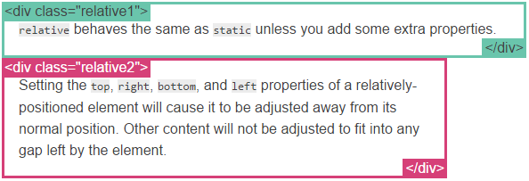
Như ta thấy ở class relative2 đã sử dụng position:relative nhưng chẳng có gì xảy ra khác thường.
Nhưng nếu ta thêm chút nữa:
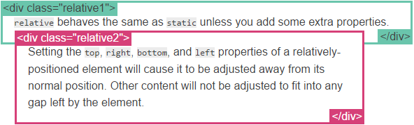
Đó :] Nó đã dịch chuyển lên 20px và sang phải 20px so với vị trí mặc định của nó.
fixed
fixed sẽ dựa vào của sổ màn hình của trình duyệt để định vị cho phần tử. Giống như relative, nó cũng có 4 thuộc tính phụ là top, right, bottom và left và có cùng cách sử dụng.
Thường những phần tử có thuộc tính fixed thường đi kèm thêm thuộc tính z-index và có giá trị lớn để nó luôn nằm bên trên các phần tử khác.
absolute
absolute là 1 giá trị phức tạp nhất. absolute nó cũng tương tự thằng fixed nhưng thay vì nó định vị vào của cửa sổ của màn hình trình duyệt thì nó sử dụng phần tử của cha, của cụ nó mà có thuộc tính position:relative làm mốc. Nó sẽ bắt đầu tìm từ thằng cha của nó có thuộc tính position:relative xem có không, nếu không có nó sẽ tiếp tục tìm đến ông, cụ, kị,… Nếu tất cả tổ tiên nhà nó không có thì nó sẽ nhận chúa trời (body) làm mốc, thằng body sẽ là tổ tiên to nhất cho mọi phần tử muốn có cha =))
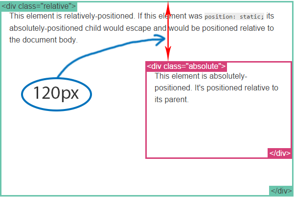
Bạn nhớ rằng là ở ví dụ này thì thằng có class là relative là cha của thằng có class absolute nhé. right:0; -> Căn sát sang bên phải, top:120px; -> Dịch xuống dưới 120px.
Bạn có thể xem thêm ví dụ tổng quan của nó: Position example.
2. Float
Một thuộc tính cũng được sử dụng rất nhiều đó là float. Thuộc tính này giúp thả trôi, mình cũng khó giải thích nên vào ví dụ sẽ dễ hiểu hơn. Ví dụ đây là 1 trường hợp chữ bao quan hình ảnh.
Đầu tiên là code html(chỉ lấy phần trong body thôi nhé).
Tiếp theo là CSS:
Và đây là kết quả:
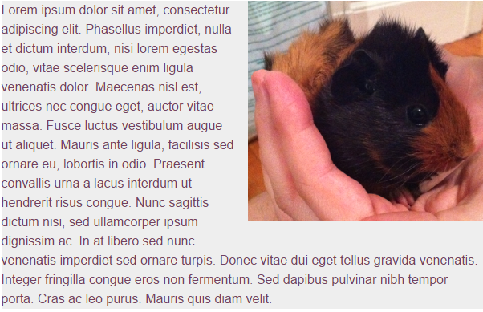
Có còn hay để sử dụng để chia cột, thay thế cho việc sử dụng table của ngày xưa.
3. Clear
Thuộc tính clear cực kì quan trọng để kiểm soát hành vi của float. Nó có giá trị nào nó sẽ dừng lại việc trôi nổi của thuộc tính float. Nếu clear: left; nó xóa bỏ left, tương tự với right còn nếu là both thì nó xóa bỏ cả hai.
Chúng ta sẽ cùng xem 2 ví dụ dưới đây.
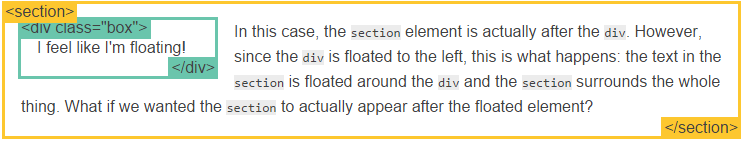
Như bạn biết phần tử section ở sau thẻ div và mặc định nó bắt đầu ở dòng mới, nhưng chuyện gì đã xảy ra khi div đặt float là left: đoạn văn bản trong section lấp quoanh box và section lại bao cả box.
Nhưng nếu thêm class vào section là after-box và thay bằng css sau:
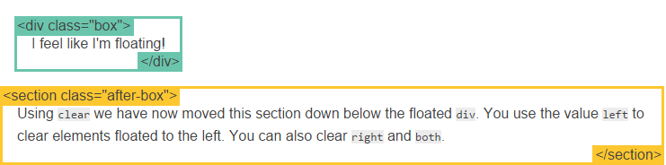
Khi thêm clear:left; thì nó đã xóa bỏ ảnh hưởng của float.
4. The clearfix hack
Bạn sẽ thỉnh thoảng gặp trường hơp hơi kì dị và xấu xí khi sử dụng float. Chúng ta cùng xem lại ví dụ ở phần float và xóa còn rất ít chữ.
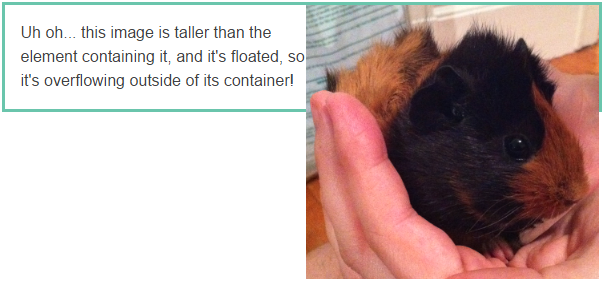
Oặc! Ảnh nó lại cao hơn đoạn văn bản kia dẫn đến bố cục rất xấu. Nhưng chúng ta đã có cách xử lý sau:
Và xem lại kết quả:
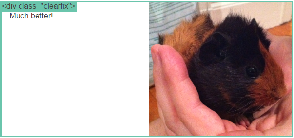
Thuộc tính này đều được hỗ trợ trên các trình duyệt mới. Còn nếu bạn muốn chạy đúng như ý muốn trên IE6 thì bạn hãy làm theo cách sau:
5.Percent width
Đơn vị phần trăm cực kì quan trọng trong việc tạo responsive cho webiste. Nó là đơn vị đo lường dựa trên phần tử chứa nó. Nó vô cùng hoàn hảo cho ảnh.
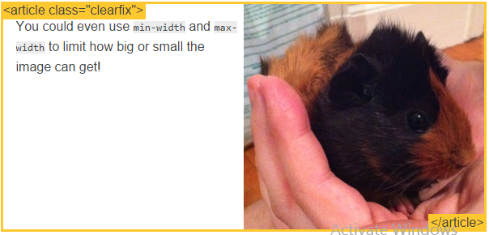
Bạn cũng có thể sử dụng thêm các thuộc tính min-width hay max-width để hạn chế cho những màn hình quá to hoặc nhỏ.
Thử với 1 ví dụ nữa với các phẩn tử khác để xây dựng bố cục website:
Và đây là kết quả:
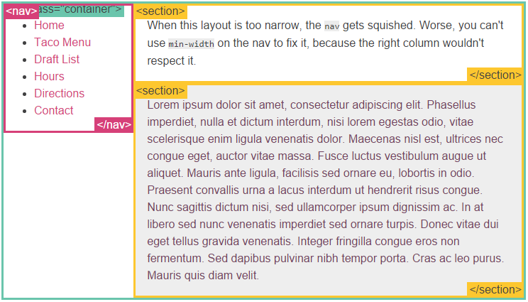
6.Media queries
“Responsive desgin” là tạo ra website có thể phù hợp với mọi thiết bị, mọi kích cỡ màn hình. Mọi người có thể duyệt website đó, đọc nội dung của website đó mà không cần phải thanh cuộn ngang hay phải phóng to vì nó quả nhỏ. Điều này khá tuyệt vời đúng không nào!
Để làm được điều này ta phải sử dụng đến media queries. Cách sử dụng bạn có thể xem ví dụ dưới đây:
Bạn có thể xem demo.
Để biết thêm về media queries bạn tham khảo thêm Media queries.
Thêm: Để tạo responsive tốt trên điện thoại thì bạn nên thêm meta viewport. Ví dụ như sau:
7. Inline-block
Bình thường để tạo được các hệ thống lưới (grid system) ta sẽ nghĩ ngay đến float, nhưng với inline-block thì dễ hơn nhiều. inline-block nó được ghép lại của inline và block. Có nghĩa là như thế nào? Nó vẫn là 1 block nhưng nó không chiếm hết chiều dài có thể có và bắt đầu ở dòng mới như block bình thường nữa mà nó sẽ chỉ chiếm đúng chiều dài hiện có của nó và bắt đầu ở ngay chỗ kết thúc của phần tử trước (trừ khi phần còn lại của hàng hiện có nhỏ quá nó mới bắt đầu sang hàng mới).
Nói có vẻ dài nên vào ví dụ cho dễ hiểu nhỉ :]
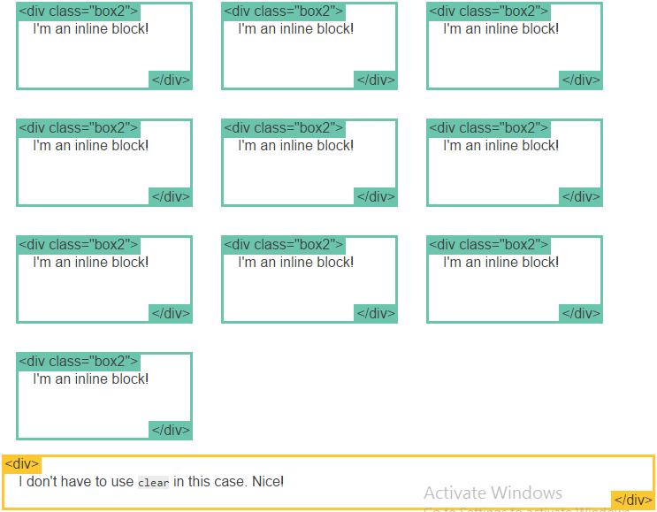
Dễ như trò xếp hình của trẻ con nhỉ =)) Chẳng cần lo nghĩ gì, chẳng sợ ảnh hưởng đến bố con thằng nào.